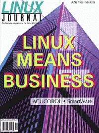

Shutdown Archive web server
Search:
Linux Journal
Issue #26/June 1996

Features
Money Management under Linux
by Curt Olson
Discover CBB, the checkbook balancing utility for Unix and X11 developed under Linux.
Linux on Mobile Computers
by Kenneth E Harker
Taking your Linux workstation wherever you go.
Using SmartWare Plus to Build the Integrated Office
by Phil Hughes
Angoss offers a suite of applications for running today's office.
Scheduled Activity: cron and at
by John Raithel
These Linux utilities can make your computer do the right thing at the right time.
News and Articles
UniForum '96
by Belinda Frazier
This Unix and Open Systems trade show report
An Introduction to Rlab
by Ian Searle
A computational tool for scientific and engineering applications
Columns
Letters to the Editor
From the Editor
Kernel Korner
Dissecting Interrupts and Browsing DMA
Linux in the Real World
Linux in the U.S. Army, or How I Spent My Winter Vacation
Product Review
Caldera Network Desktop Version 1.0
Product Review
Acucobol
New Products
Directories & References
Consultants Directory
Archive Index
Shutdown Archive web server
Search:
Copyright © 1994 - 2018
Linux Journal
. All rights reserved.